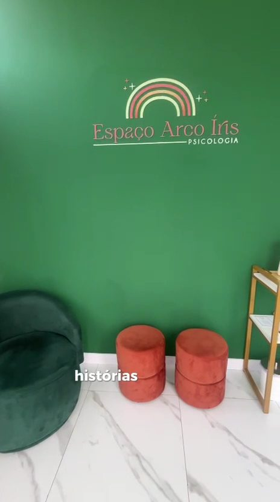
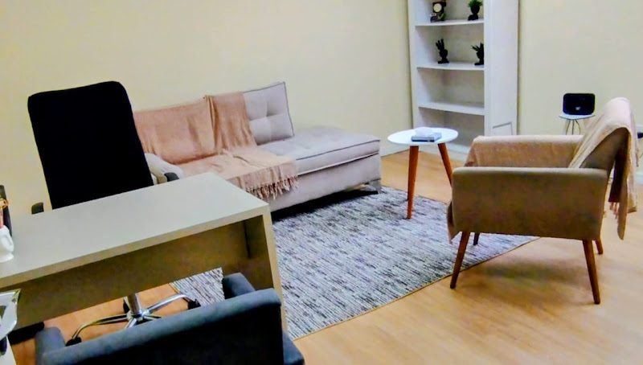
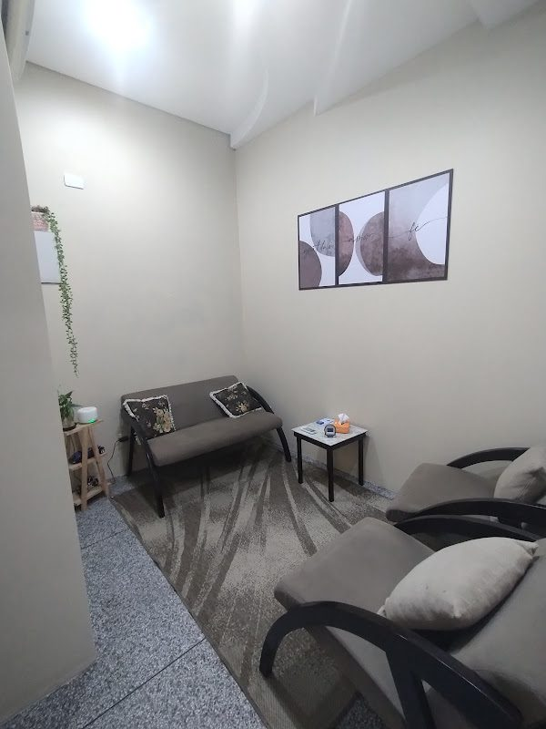

Clínica de psicologia em Guaramirim – SC
Acolhimento para a criança, apoio para toda a família.
Psicologia infantil, orientação de pais, atendimento para adultos e neuropsicopedagogia, com uma escuta atenta e individualizada, que respeita cada fase do desenvolvimento.
- Seg a sex das 8h às 20h
- Beira Rio Guaramirim – SC
- 5,0 no Google 21 avaliações

Para pais e responsáveis
Quando levar meu filho ao psicólogo infantil?
Muitos pais têm essa dúvida quando começam a perceber mudanças no comportamento da criança. A psicologia infantil ajuda a entender o que está por trás desses sinais, oferecendo suporte à criança e à família.
- Irritação frequente ou mudanças bruscas de comportamento
- Dificuldades na escola ou na aprendizagem
- Ansiedade, medos ou preocupação excessiva
- Isolamento ou pouca interação com outras crianças
- Mudanças na família: separação, chegada de um irmão, luto
- Alterações no sono, na alimentação ou no humor
Na dúvida, uma conversa inicial ajuda a entender se há necessidade de acompanhamento.
Atendimentos
Cuidado para cada fase da vida
-
Psicologia infantil
Por meio do brincar e de recursos adequados à idade, a criança encontra formas de expressar o que sente e desenvolver novas habilidades emocionais.
-
Orientação de pais e família
Encontros com os responsáveis para compreender o momento da criança e construir, juntos, uma rotina de cuidado em casa.
-
Psicoterapia para adultos
Um espaço seguro para falar sobre ansiedade, relações, trabalho, perdas e tudo aquilo que tem pedido atenção.
-
Neuropsicopedagogia
Avaliação e intervenção nas dificuldades de aprendizagem, atenção, leitura e escrita, em diálogo com a família e a escola.
O espaço
Um ambiente pensado para acolher
Salas reservadas, tranquilas e confortáveis, para que crianças, famílias e adultos se sintam à vontade desde o primeiro encontro.
“Já nos sentimos em casa no nosso dia de atendimento.”


Como funciona
Começar é mais simples do que parece
Você não precisa saber qual atendimento escolher. A gente ajuda nisso.
-
Você entra em contato
Pelo WhatsApp ou pelo formulário, conte brevemente o que procura e quais horários funcionam para você.
-
Indicamos o atendimento
Respondemos em horário comercial com a profissional mais indicada, valores e horários disponíveis.
-
Primeiro encontro
Uma conversa para conhecer a demanda e combinar juntos a frequência do acompanhamento. No atendimento infantil, ela costuma começar com os responsáveis.
Equipe
Quem cuida de você
Profissionais com registro em seus conselhos, comprometidas com a ética, o sigilo e a formação contínua.
-
Yasmim [sobrenome]
Psicóloga · CRP 12/00000
Psicoterapia infantil e de adultos.
-
[Nome da profissional]
Neuropsicopedagoga
Aprendizagem, atenção, leitura e escrita.
-
[Nome da profissional]
Psicóloga · CRP 12/00000
Orientação de pais e família.
Dúvidas frequentes
Antes de começar
Os pais participam do atendimento infantil?
Sim. O acompanhamento da criança inclui encontros periódicos com os responsáveis, para compartilhar percepções e orientar o cuidado em casa, sempre preservando o vínculo e a confiança da criança.
O que é falado nas sessões fica em sigilo?
Sim. O sigilo é um dever ético previsto no Código de Ética Profissional do Psicólogo. No atendimento de crianças e adolescentes, o que pode ser compartilhado com a família é combinado desde o início.
Quanto tempo dura cada sessão?
Em geral, cerca de 50 minutos, com frequência semanal. O formato é combinado com a profissional conforme cada caso.
Qual a diferença entre psicólogo e neuropsicopedagogo?
O psicólogo trabalha os aspectos emocionais e comportamentais. O neuropsicopedagogo atua nos processos de aprendizagem, como atenção, memória, leitura e escrita. Muitas vezes os dois trabalhos se complementam, e indicamos o caminho mais adequado na primeira conversa.
Quais são os valores e formas de pagamento?
Os valores variam conforme o tipo de atendimento. Fale com a gente pelo WhatsApp (47) 3512-3486 para receber as informações e consultar a possibilidade de recibo para reembolso.
Localização
Venha nos visitar
R. Felippe Kupas, 24 – Sala 01Beira Rio · Guaramirim – SC
CEP 89270-000
| Segunda a sexta | 08h às 20h |
|---|---|
| Sábado e domingo | Fechado |
Agendamento
Vamos conversar?
Preencha o formulário e ele abre uma mensagem pronta no nosso WhatsApp. Se preferir, fale diretamente:
- WhatsApp e telefone(47) 3512-3486
- Instagram@arco.iris_psicologia
- HorárioSegunda a sexta, das 8h às 20h